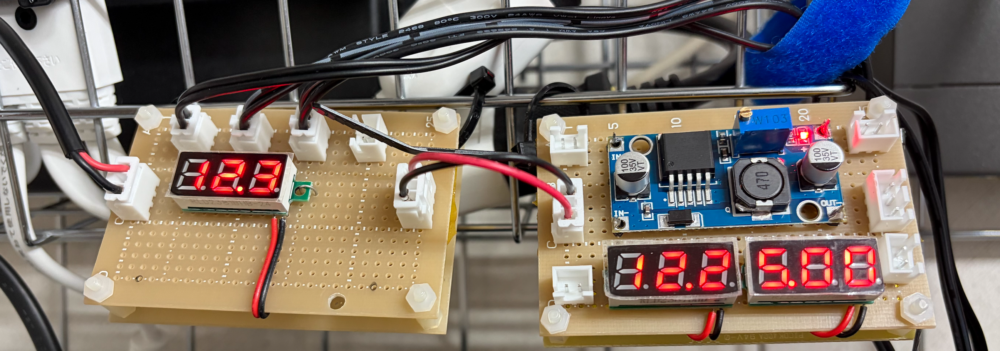

📗 電源アダプタを統合する¶
2026/11/21公開 2026/11/21更新
🟩 背景¶
電源アダプタがやらた多く、タコ足配線になっている。電力的には全く問題ないが、とにかくかさばる。ということで、電源アダプタの統合作業に入った。ほとんどの電源アダプタは12Vだが、5Vの電源アダプタもあるので、DC-DCコンバーターで12Vから5Vへの降圧装置も作る。

🟩 構成¶
左の島が、12Vの配電盤
右の島が、12Vから5Vへの降圧装置となっている。
毎回テスターで電圧を図るのも面倒なので、電圧計をつけた。アマゾンで5個695円。誤差が若干ある（12Vを左右の島間で直結しているのに、左は12.3V、右は12.2Vと表示している）。
🟨 12Vの配電盤¶
左端子に接続した60Wの12Vアダプタから、電気を供給している。将来的に足らなくなったら、100W級の19.5Vアダプタから降圧して使用予定。
4方路分しか分配コネクタを用意してない。適宜増設予定。
右の降圧装置に電源を供給している。
🟨 12Vから5Vへの降圧装置¶
アマゾンでLM2596のDC-DC降圧モジュールを買った。6個で680円
モジュールに仕様が書かれてないので、Claudeに聞いた。「石の仕様では、連続では2A、短時間なら3Aまで可能」らしい。ちょっと貧弱だな。沢山つなぐときは、並列化が必要そうだ。
🟩 苦労したところ¶
XHコネクタの圧着にやたら失敗する。成功率20%くらいだったが、だんだんコツがわかってきた。1.6mmで圧着後に1.4mmで仕上げの圧着をすればよさそうだ。
DC-DC降圧モジュールの出力電圧が入力電圧とほぼ同じで、うんともすんとも調整できかなかった。Claudeに聞いたら、「出力電圧を測りながら、 多回転トリマ を反時計回りに 10〜20回転 回してください。この手の基板はたいてい反時計回りで電圧が下がります」。「10回以上回転する」は想定外だった。言われたと通りにしたら、調整できるようになった。
🟩 現在の状況と今後の予定¶
現在、連続試験実施中。
3方路の機材に12Vを供給しているだけだが、電力計でみると9.8Wくらいを指している。余裕過ぎる。この調子でどんどん統合しよう。
2.1x5.5mmのDC電源プラグを大量調達した。AUG22とAUG24のペアケーブルも買った。量産体制にはいる。
3.3Vの降圧装置を追加予定。